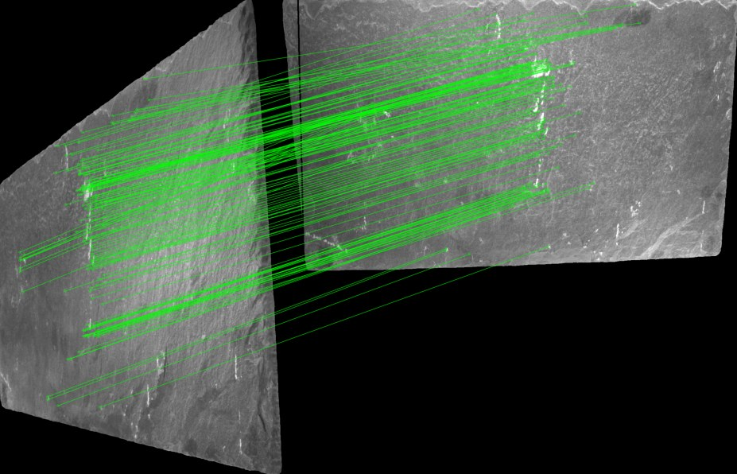
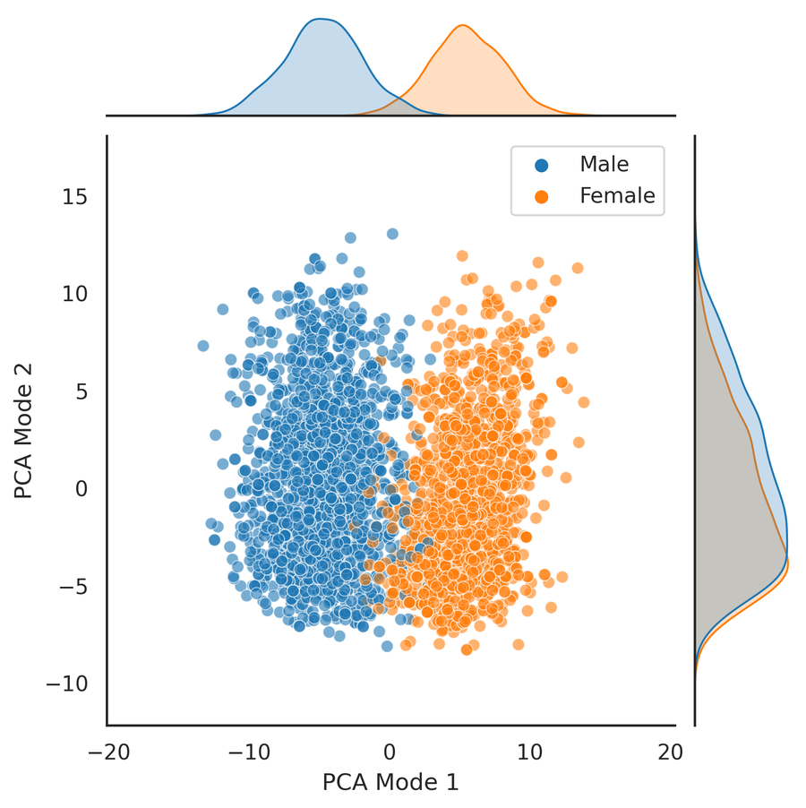

Isolating the light strips in a night-time car image, from scratch in C++ without OpenCV. This page runs a line-for-line JavaScript port of that code. It reproduces the compiled C++ output exactly: Otsu gives 72 (green) and 73 (red); k-means gives 73 for both colour channels.
Find the brightest pixel in every column, drop columns whose peak intensity is an outlier (z-score above the cutoff), then fit a least-squares line through what remains. At the original cutoff of 2.0 the port gives slope 0.0044 and intercept 426.25, matching the C++ binary.
A U-Net written from scratch with LibTorch, the PyTorch C++ API, trained to label every pixel of a 2D brain MRI slice as background, edema, non-enhancing tumour or enhancing tumour. The data comes from BraTS (Medical Segmentation Decathlon, Task 01).
// encoder.cpp — each level halves the resolution with a stride-2 conv, doubles the channels n = n*2; // 32 enc2 = torch::nn::Sequential( torch::nn::Conv2d(torch::nn::Conv2dOptions((int64_t)(n/2), n, 3).stride(2).padding(1)), // 60x60 torch::nn::BatchNorm2d(n), torch::nn::ReLU(), torch::nn::Conv2d(torch::nn::Conv2dOptions(n, n, 3).padding(1)), torch::nn::BatchNorm2d(n), torch::nn::ReLU() );
// decoder.cpp — upsample, concatenate the matching encoder map, convolve torch::Tensor Decoder::forward(std::vector<torch::Tensor> connections){ auto b1 = b->forward(connections[3]); auto y1 = dec1->forward(torch::cat({b1, connections[2]}, 1)); auto t1 = dec1_t->forward(y1); auto y2 = dec2->forward(torch::cat({t1, connections[1]}, 1)); auto t2 = dec2_t->forward(y2); auto y3 = dec3->forward(torch::cat({t2, connections[0]}, 1)); return y3; // [batch, 4, H, W] logits }
// main.cpp — training step torch::Tensor output = model->forward(images); torch::Tensor loss = criterion(output, labels); // CrossEntropyLoss over 4 classes optimizer.zero_grad(); loss.backward(); optimizer.step(); // ...after validation: keep the checkpoint with the lowest val loss if (val_loss < best_val_loss) { torch::save(model, best_model_path); }
One lightweight model that does two jobs on natural slate: it re-identifies the same tile across camera views, and it classifies which of six Spanish quarries the tile came from. XFeat's fine-grained local features handle matching and add surface texture to classification. MobileNetV3 supplies global semantics.

Pre-trained "foundation" models are attractive in medical imaging, where datasets are small and imbalanced. But deep classifiers can detect protected attributes such as sex and race from X-rays, and might use them as shortcuts. This thesis probes TorchXRayVision models for that kind of bias, then tests Domain Adversarial Neural Networks (DANNs) as a fix when labels are corrupted for one subgroup.
